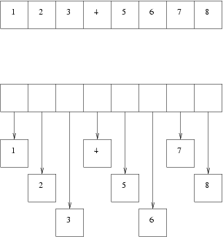

函数式编程
什么是函数式编程
到现在我们已经讲了很多了，但还没有真正涉及到函数式编程。
目前所讲的所有特性 - 丰富的数据类型（rich data types），
模式匹配（pattern matching）， 类型推导（type inference），
嵌套函数（nested functions） -
可以想象它们都可以在一种”超级C“语言中存在。这些特性当然很酷，它们使得代码简洁易读，减少bug，但是它们实际和函数式编程没什么关系。实际上我的
观点是函数式编程语言的妙处不是在于函数式编程，而是因为在我们长年习惯于类C语言编程的时候，编程技术已经提高很多了。因此当我们一次又一次地写struct { int type; union { ... } }的时候，ML和Haskell程序员却有着很多安全的变量和数据类型的模式匹配。当我们小心翼翼地
free所有的malloc时候，很多语言在上世纪八十年代就有了超越手工管理的内存垃圾收集器。
好了，现在是时候告诉你们什么是函数式编程了。
基本的但不是很能说明问题的定义是在函数式语言中, 函数（functions）是一等公民。
听上去不是很有用，让我们来看个例子。
# let double x = x * 2 in
List.map double [ 1; 2; 3 ];;
- : int list = [2; 4; 6]
在这个例子中，我首先定义了一个嵌套函数double，它读入一个参数x后返回x * 2。然后map在给定的列表([1; 2; 3])的每个元素上调用double来生成结果：一个每个数都扩大一倍的新的列表。
map被称为高阶函数（higher-order function）
(HOF)。高阶函数是指一个把其他函数作为参数之一的函数。
到现在为止还算简单。如果你对C/C++熟悉的，这就象传递一个函数指针作为参数。Java中有匿名类(anonymous
class)就像一个低速的闭包（closure）。如果你知道Perl那么你可能已经知道和使用了Perl中的闭包和Perl的map函数，这和我们现在所说的完全相同。事实上Perl很大程度上也是一个函数式语言。
闭包是那些带着它们被定义时的环境的函数。特别的，一个闭包可以引用它定义时存在的变量。让我们把上面那个函数变得更通用一些，以便我们可以对任何整数列表乘以一个任意值n:
# let multiply n list =
let f x =
n * x in
List.map f list;;
val multiply : int -> int list -> int list = <fun>
因此:
# multiply 2 [1; 2; 3];;
- : int list = [2; 4; 6]
# multiply 5 [1; 2; 3];;
- : int list = [5; 10; 15]
关于multiply函数有一点值得注意的是嵌套函数f.
这是一个闭包。我们注意一下f怎样使用变量n的值，我们并没有把n作为显式的参数传递给它。f是从它的环境中找到它的。n是传递给函数multiply的参数，所以在这个函数中都是有效的。
这可能听上去很简单，但让我们更进一步的仔细观察下那个对map的调用List.map f list.
map 的定义在List模块中，离当前的代码很远。也就是说，我们把f
传递到一个”很久很久以前，在一个很遥远很遥远的星系“（译者：星球大战片头）中的一个模块。
代码可以传递f给其他模块，或者把它的引用（reference）在某个地方以便之后
再调用它。不管怎样，这个闭包保证f总是可以获取它定义时的环境，比如n。
这里是一个来自lablgtk的真实的例子。实际上这是一个类方法（我们还没有谈到类和对象，暂时 可以把它看作一个函数定义。）
class html_skel obj = object (self)
...
...
method save_to_channel chan =
let receiver_fn content =
output_string chan content;
true in
save obj receiver_fn
...
end首先你要知道的是方法最后调用的save函数的第二个参数是一个函数(receiver_fn)。它带着从widget获取的文字重复调用receiver_fn函数。
现在来看receiver_fn的定义。这个函数是一个闭包，因为它含有一个引用,
这个引用指向它的环境中的chan。
偏函数应用（Partial function applications）和 currying（科里化）
让我们定义一个加法函数用来相加两个整数。
# let plus a b =
a + b;;
val plus : int -> int -> int = <fun>
这里是给前面上课时睡着的朋友的几个问题。
- 什么是
plus? - 什么是
plus 2 3? - 什么是
plus 2?
问题一很简单。plus是一个函数。它有两个整数型参数并返回一个整数。我们这样来表示这个函数的类型：
plus : int -> int -> int问题二就更简单了。plus 2 3是一个数，整数5。我们这样来表示它的类型：
5 : int但是问题三呢？看上去plus 2是一个错误。但是实际上却不是的。如果我们在OCaml的
toplevel中输入上述代码，toplevel会显示：
# plus 2;;
- : int -> int = <fun>
这不是一个错误。它告诉我们plus 2事实上也是一个函数。它以一个整数为参数并返回一个整数。这是一个什么样的函数呢？让我们给这种神秘的函数起名为f,然后尝试把它作用在几个整数上来看它到底做什么。
# let f = plus 2;;
val f : int -> int = <fun>
# f 10;;
- : int = 12
# f 15;;
- : int = 17
# f 99;;
- : int = 101
在工程上这已经足够proof by
example让我们声明plus 2是一个给整数加2的函数。
回到原始的定义，让我们把第一个参数(a)换成2:
let plus 2 b = (* 这不是真正的OCaml代码！ *)
2 + b这样我希望你或多或少的开始理解为什么plus 2是给整数加2的函数了吧。
现在来看这些表达式的类别，我们可以领悟到在函数类型中用奇怪的箭头符号->的原因了。
plus : int -> int -> int
plus 2 : int -> int
plus 2 3 : int这个过程叫做currying（科里化） (或者应该叫 uncurrying（去科里化）, 我一直搞不清这两个定义).这个名字来源与Haskell Curry的与lambda calculus有关的重要发现。为了避免进入OCaml背后的数学世界而使这个教程变得过于繁琐，我将不会再进一步地说明这个主题。如果感兴趣，你可以从用 Google （译注：国内的小伙伴们可能要自行百度了）来获得更多关于currying的信息。
还记得开始时候我们的double和multiply函数吗？ multiply是这样定义的:
# let multiply n list =
let f x =
n * x in
List.map f list;;
val multiply : int -> int list -> int list = <fun>
现在我们可以象这样来更简单地定义double, triple函数：
# let double = multiply 2;;
val double : int list -> int list = <fun>
# let triple = multiply 3;;
val triple : int list -> int list = <fun>
它们确实是函数, 不信你看:
# double [1; 2; 3];;
- : int list = [2; 4; 6]
# triple [1; 2; 3];;
- : int list = [3; 6; 9]
你也可以不用中间函数f，而象这样来直接用部分应用（partial
application）：
# let multiply n = List.map (( * ) n);;
val multiply : int -> int list -> int list = <fun>
# let double = multiply 2;;
val double : int list -> int list = <fun>
# let triple = multiply 3;;
val triple : int list -> int list = <fun>
# double [1; 2; 3];;
- : int list = [2; 4; 6]
# triple [1; 2; 3];;
- : int list = [3; 6; 9]
在上面的例子中，((*) n)是一个(*) (乘)函数的部分应用。
注意这里额外的空格，它使得OCaml不会认为(*是注释的开始。
你可以把中序操作符放在括号中而形成一个函数。这里是一个和以前plus函数等价的一个定义：
# let plus = ( + );;
val plus : int -> int -> int = <fun>
# plus 2 3;;
- : int = 5
这里是更多的一些有趣的curring：
# List.map (plus 2) [1; 2; 3];;
- : int list = [3; 4; 5]
# let list_of_functions = List.map plus [1; 2; 3];;
val list_of_functions : (int -> int) list = [<fun>; <fun>; <fun>]
函数式编程的优点
函数式编程，像其他任何优秀的编程技术一样，是你的工具箱中解决某些问题的利器。它使得callback函
数变得非常方便，可以用于从GUI编程到事件驱动循环等多种场合。它也很适合编写通用算法。List.map
就是一个把函数应用到链表中每个元素的通用算法。类似的，你也可以定义树的通用算法。另外，某些类型的
数值运算可以用函数式编程更加迅速地解决（比方说求导）。
纯函数式和非纯函数式编程
一个纯函数是没有副作用的。副作用的意思是这个函数保留了某些隐藏的状态。strlen就是
一个C的纯函数的例子。如果你调用strlen到相同的字符串，它总会返回相同的结果。strlen的输出
只依赖于输入而没有任何其他。很多C的函数是非纯的。比方说malloc，显然它不会对相同的输入返回相同的结果。
malloc内部有一个很大的数据结构记录状态，如堆的分配情况，用户接口调用情况，OS相关信息等。
ML衍生的语言，如OCaml是“几乎纯”的。它们允许引用和数组引入一定的副作用，但很大程度上 你会写纯函数，而语言本身也鼓励你这么做。另一个函数式语言Haskell是纯的（如果不考虑IO模块）。 相比，OCaml更加实用，因为非纯的函数有时候还是很有用的。
在理论上，纯函数有很多好处。其中一个就是如果一个函数是纯的，那么编译器可以把以 同样参数对该函数的多次调用消除至只剩一个（译注：gcc对其有支持，分别是attribute((pure)) 和attribute((const))，具体参见info page）。一个C的例子是:
for (i = 0; i < strlen (s); ++i)
{
// Do something which doesn't affect s.
}如果是就代码原样编译，那么这个循环的复杂度是O(n^2^)，因为strlen(s)在每个
循环都会被调用，而该调用会把s遍历一遍。如果编译器知道strlen是一个纯函数，
并且s不会被更新，它可以简单地把每个循环中的strlen调用替换成常数，
使得这个循环变成O(n)。那么编译器是否真的这么做了呢？对于strlen，是的，
对于其他函数，不见得（译注：如我之前所述，gcc的扩展可以让编译器认识纯函数，
并且做这样的优化。但是这种优化不是必然会做的，你可以通过参数-O0使得编译器
不做任何优化）。
集中注意，由底至上地写小的纯函数有助于构建可重用的代码，并且也可以随着测试。 现在流行的做法是由顶至下地计划程序，但是作者的意见是这往往会让整个项目崩盘 （译注人话：计划赶不上变化，怎么做评估都没用）。
非懒惰和懒惰
C类和ML类的语言都是非懒惰的（饥饿求值），而Haskell和Miranda都是懒惰的。OCaml是缺省非懒惰， 但是在需要的时候支持懒惰的风格。
对于一个非懒惰的语言，参数和函数总是在使用前被求值，然后再传入到函数中。比如 下面的代码会引起除零错误：
# let give_me_a_three _ = 3;;
val give_me_a_three : 'a -> int = <fun>
# give_me_a_three (1/0);;
Exception: Division_by_zero.
如果你用一些传统的语言编程，这就是这么回事，但是你可能会为事情还可以 以另一个方式发生而惊讶。
在懒惰语言中，一些奇怪的事情会发生。函数的参数只有在被使用的时候才会被求值。
give_me_a_three没有使用参数而直接返回3，因而在一个懒惰语言中，这个函数调用
不会失败，因为这个参数根本没有被求值！因此，也不会引起除零错误。
懒惰语言允许你定义无限长的链表，只要你不会真的要遍历整个链表（比方说你只要前10个元素）。
OCaml是一个非懒惰的语言，但是Lazy模块允许你写懒惰的表达式，下面就是这样一个例子：
# let lazy_expr = lazy (1/0);;
val lazy_expr : int lazy_t = <lazy>
注意到其类型是 int lazy_t。
因为give_me_a_three的输入是任何类型，所以我们也可以把这个懒惰表达式传入：
# give_me_a_three lazy_expr;;
- : int = 3
如果要求值，我们要用Lazy.force函数：
# Lazy.force lazy_expr;;
Exception: Division_by_zero.
box和unbox类型
译注：这个box实在不好翻，有人会翻作“装箱”，但这实在辞不达意。这个词的意思只可意会，因此不做翻译。 box的意思是，把一些标准数据类型，如int，用一个对象封装，而这个对象的行为如int本身无异。但是 这会损耗一定效率。
你可能会经常听到函数式语言是boxed的。我经常会混淆这个词，但实际上在C/C++, Java中， 这里的区别还是很明显的（Perl总是box的）。
一个boxed的对象就像用C中用malloc分配在了堆上（C++中则是new），并且被指针引用，
下面是一个C的例子：
#include <stdio.h>
void
printit (int *ptr)
{
printf ("the number is %d\n", *ptr);
}
void
main ()
{
int a = 3;
int *p = &a;
printit (p);
}a是在栈上的，显然是unboxed的。
而函数printit打印一个boxed的整数。
下面的图展示了一个unboxed（上）和boxed（下）的整数：

显然操作一个unboxed的整数数组是比操作一个boxed的要快很多。并且由于上了很多 小的分块，垃圾收集也要快很多。
在C/C++，这应该不成问题，在Java中，int是unboxed而Integer是boxed的。Ocaml中，
基本类型是unboxed的。